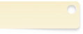

梅しらすご飯
- 60分
- 4人前
- 食材及び分量
-
- 白米3合
- カリカリ梅3個
- しらす50g
- 必要な調理器具
- サンプル、鍋、土鍋、石鍋、親子鍋、寸胴鍋、圧力鍋、炊飯器 ゆで鍋、煮ざる、お玉 トング、電気ポット、ケトル
- 1炊飯器に洗った米と梅干しを入れ、いつもどおりの水加減で炊く。炊飯器に洗った米と梅干しを入れ、いつもどおりの水加減で炊く。炊飯器に洗った米と梅干しを入れ、いつもどおりの水加減で炊く。
- 2フライパンにサラダ油少々（分量外）を熱し、しらすを軽く炒め、皿に取っておく。
- 3枝豆は解凍し、さやから取り出す。
- 4ご飯が炊けたら、しゃもじでかき混ぜて、梅干しの種を取り出す。2.と3.を加え、ざっと合わせてできあがり。